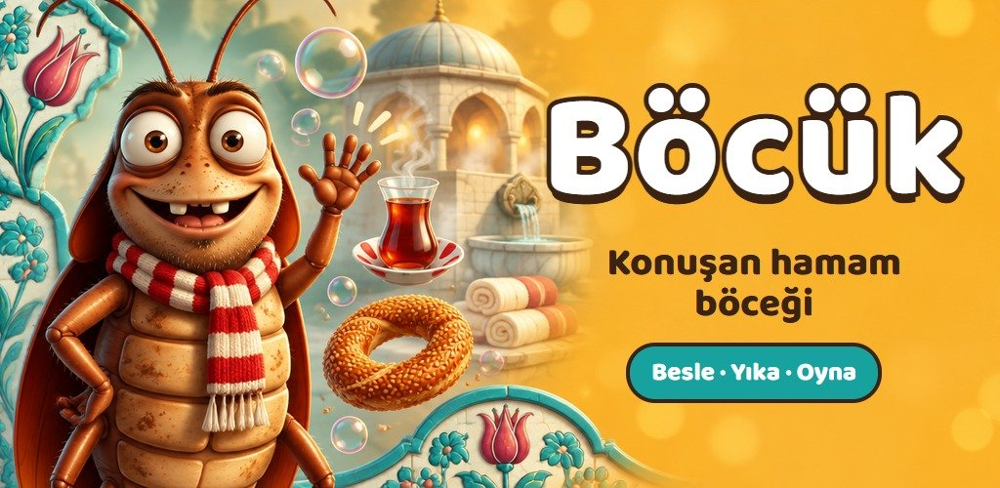
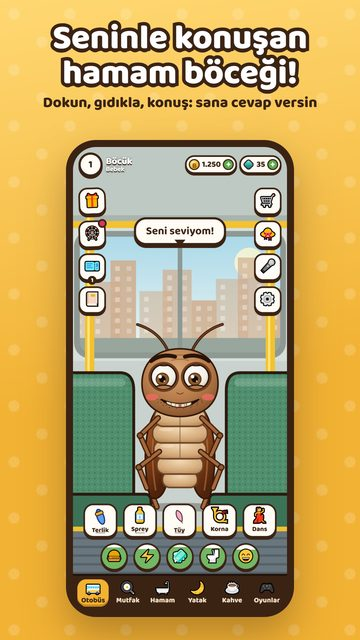
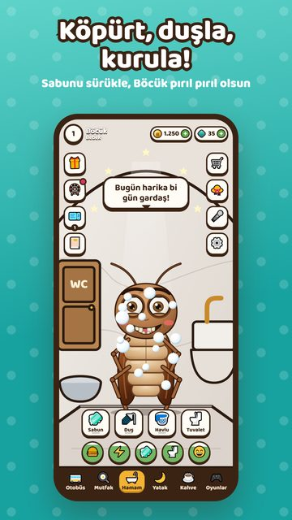
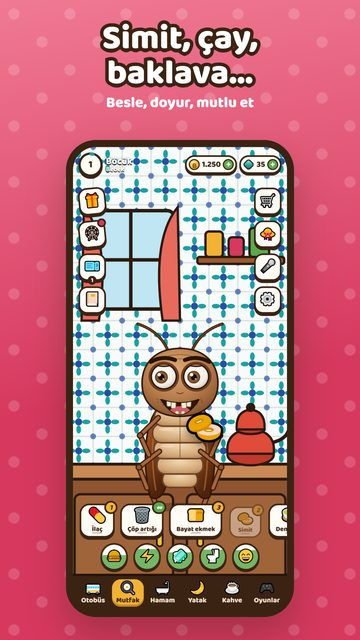
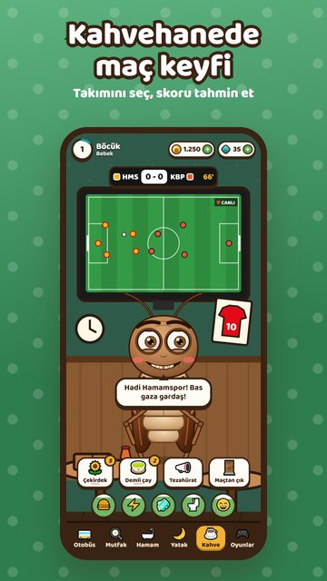
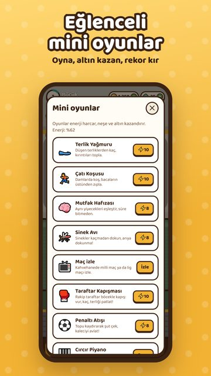
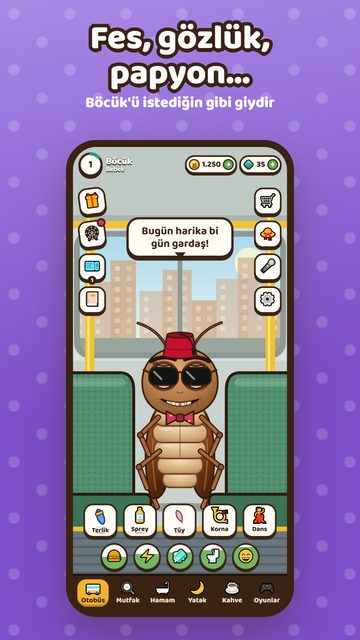
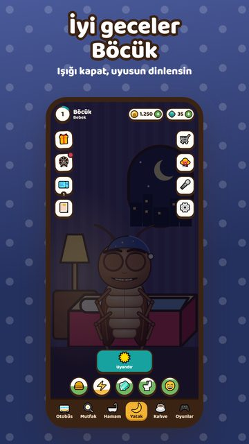

Seninle konuşan hamam böceği!
Böcük; dokununca gülen, gıdıklanınca kıkırdayan, sen konuşunca kendi komik sesiyle tekrar eden ya da cevap veren sevimli bir hamam böceği. Onu besle, yıka, uyut, giydir ve birlikte oyna.
App Store · yakında
Google Play · yakında







Neler var?
- Konuş, tekrar etsin ya da cevap versin. Mikrofon yalnızca sen düğmeye basınca açılır; ses kaydedilmez, cihazından dışarı çıkmaz.
- Bakım: Sabunu sürükleyip köpürt, duşla durula, havluyla kurula. Simit, çay, baklava yedir; uykusu gelince ışığı kapat.
- Kahvehane: Hayali takımlar arasında milli maç ya da lig maçı izle, skoru tahmin et, tezahürat yap.
- Mini oyunlar: Terlik Yağmuru, Çatı Koşusu, Mutfak Hafızası, Sinek Avı, Taraftar Kapışması, Penaltı Atışı, Cırcır Piyano.
- Giydir: Fes, gözlük, papyon, atkı, forma ve kabuk renkleri.
- İnternetsiz oynanır. İlerlemen yalnızca cihazında saklanır, hesap açman gerekmez.
- Göz ve çocuk dostu: Sakin hareket modu, gece modu, mola hatırlatıcısı.
Ücretsiz mi?
Evet, oyunun tamamı ücretsiz oynanır. İsteğe bağlı ödüllü reklamlar ve uygulama içi satın almalar vardır (reklamları kaldırma, altın/elmas paketleri, haftalık VIP). 13 yaşından küçük oyunculara kişiselleştirilmiş reklam gösterilmez ve satın almalar ebeveyn kilidiyle korunur.